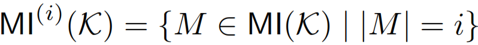
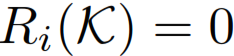
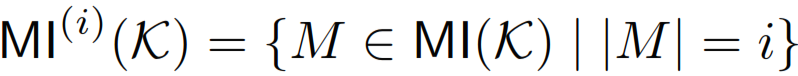
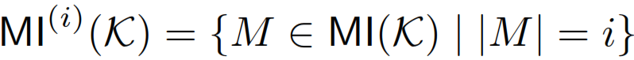
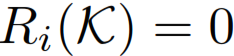
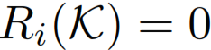

For define  and . Furthermore define  if and otherwise . Consider finally the function defined via . The Df inconsistency measure is then defined as
The Df inconsistency measure has been proposed in [Mu:2011]. Note that also other instantiations for are considered in [Mu:2011].
 define  and
define  and  . Furthermore define  if
. Furthermore define  if  and otherwise
and otherwise  . Consider finally the function
. Consider finally the function  defined via
defined via  . The Df inconsistency measure
. The Df inconsistency measure  is then defined as
is then defined as

 are considered in [Mu:2011].
are considered in [Mu:2011].